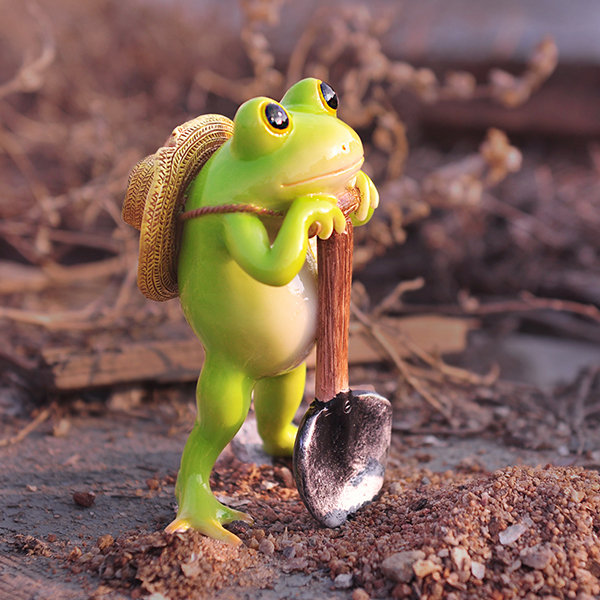

Hannah's House

About Me
I'm a fourth-year Film major. I work for Ath Rec doing videography, editing and social media marketing. I love sloths.
 Sloth
Sloth
Why I love sloths
- They are cute
- They eat flowers
- They poop once a week
- They are friendly